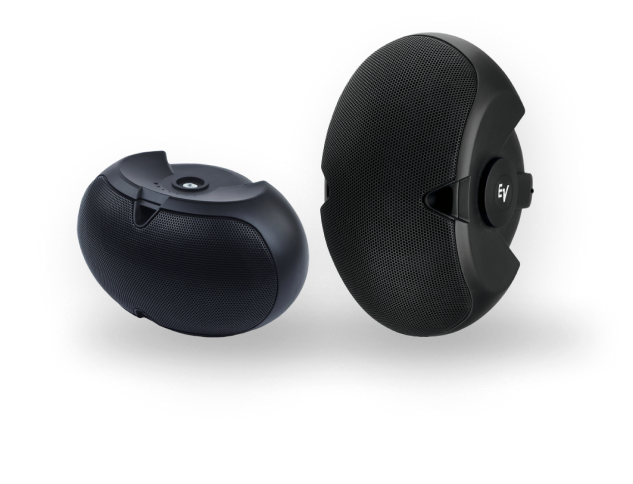
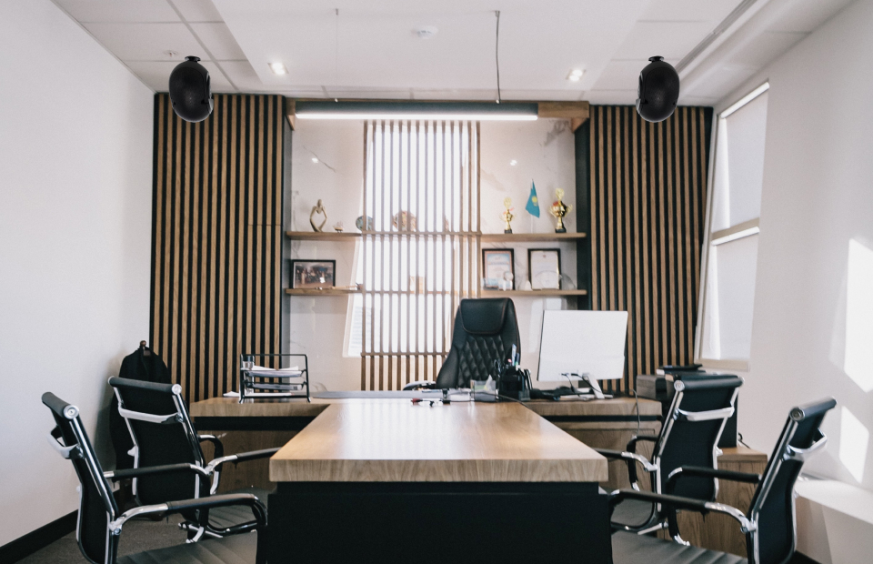

Оснащение конференц-залов
Видео конференции
Профессиональное оборудование для конференц-залов предназначено для проведения и организации презентаций, совещаний, бизнес-тренингов и онлайн-трансляции контента.


Профессиональное оборудование для конференц-залов предназначено для проведения и организации презентаций, совещаний, бизнес-тренингов и онлайн-трансляции контента.